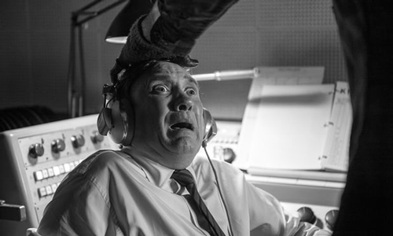
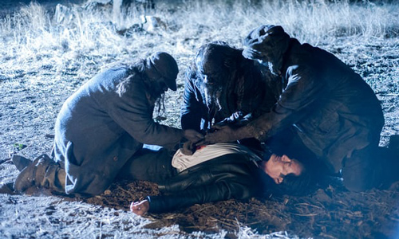
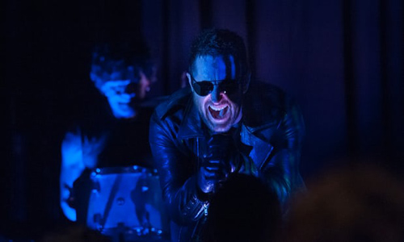
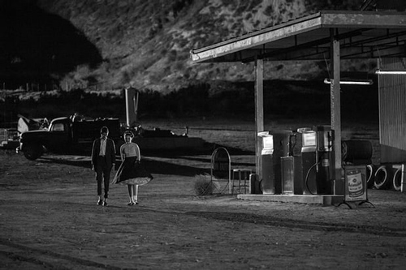

After this bewilderingly brave and groundbreaking hour of television, David Lynch has outdone himself. What an unforgettable journey.

This was the darkest, most bewildering episode in the show’s history – but let’s try our best to unpick the unfathomable. Hats off to the executives who let Frost and Lynch run with this harrowing vision. I’m grateful for whatever they produce, but this run has exceeded all my expectations and now, more than ever, has taken us to places we have previously only dreamed.
With their usual disregard for conventional storytelling and pacing, it is fitting that after last week’s episode, which tied up so many loose ends, we delve deeper into the show’s rich mythology. It starts in linear fashion, with Bad Coop and Ray making a break from prison, the stench of a double-cross heavy in the air. Bad Coop knows of Ray’s previous plot to kill him, and Ray’s got some serious front to hold out for cash in exchange for the information he’s memorised. A pitch-black stand-off spells trouble for Ray, but he’s seemingly one step ahead and slugs a couple of shots into Bad Coop’s chest. Surely this will be the seismic shock to the doppelganger that jolts our coma-induced protagonist out of his dream state and back somewhere close to the man we love and long for. One can only hope! Ray makes a well-advised dash for it after seeing those returning ashen spectres (doused in scorched engine oil?) hacking away at the leaden body, and puts in a quick call to our man in Buenos Aires – the maddeningly still off-screen, and long-time missing FBI agent, Phillip Jeffries.

Pretty straightforward so far, but what follows is so mind-meltingly brave and groundbreaking that’s it’s arguably the most avant garde piece of mainstream television since the show’s initial run.
If you thought that scene sweeping up in the Roadhouse last week was agonisingly drawn out, this episode probably isn’t for you. But there’s no doubt this artful montage of all Lynch’s favourite techniques bears more weight than the inconsequential brushstrokes of The Bang Bang Bar. That said, it’s pretty incredible that Nine Inch Nails rocking up and performing mid-episode is the least interesting thing to happen this week. The soundscapes Lynch has put together for this run have been mesmerising, and most definitely worthy of donning your headphones.

During an artfully protracted delve into the heart of a nuclear test explosion, we may well get the revealing origins of how Bob first appeared in this realm. Was that another glimpse at the convenience store in which these spirits purported to reside? And is what follows our first proper look at the White Lodge? We’ve unknowingly visited here before, in the opening shots of this series, and on Cooper’s escape from the Red Room over that restful blue ocean – but this is a more insightful encounter, that hardcore fans of the show’s Blue Rose elements have longed for. The megalithic outer shell gives way to Victorian music hall splendour, and our morally ambiguous Giant looks concerned at what unfolds.
It makes sense that Bob, who aggressively feeds on Garmonbozia – the fear and sorrow of human kind – should be spawned from a man-made act of humongous destruction. As a counter to this, the Giant casually floats upwards and spawns a golden globe from the electric tendrils billowing from his head and with the help of his Senorita, brings Laura into existence and sends her into the world. This is an amazing revelation and is either a counter to this evil or, perhaps more interestingly, a potential honey trap to lure Bob back to where he should be. It’s a problem that is an ongoing thorn in the side for the other Lodge-dwellers.

Ten years later and two teens looking to share a tender moment seem to unwittingly symbolise the end of the age of innocence as those ashen figures run amok, with their leader breaking into the local radio station to spread their foreboding message. Somebody give that chap a light! While your mind is pounding trying to make sense of it all, everyone else is having theirs ripped out with one insouciant grip.
The freakish toad-fly hybrid that crawls menacingly from the beach into the mouth of this unknown teenage sweetheart is pure Lynchian nightmare. Could this be a young Sarah Palmer? I’m not so sure but I, like many others, have learned that there’s little point trying to second guess where this show is taking us. Much better to sit back and enjoy the horror and majesty of this unforgettable journey.